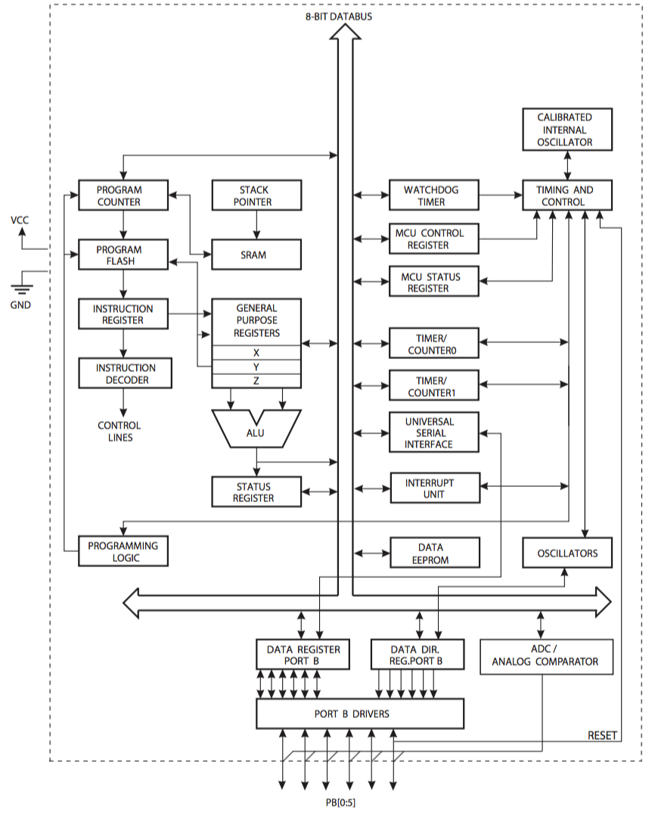
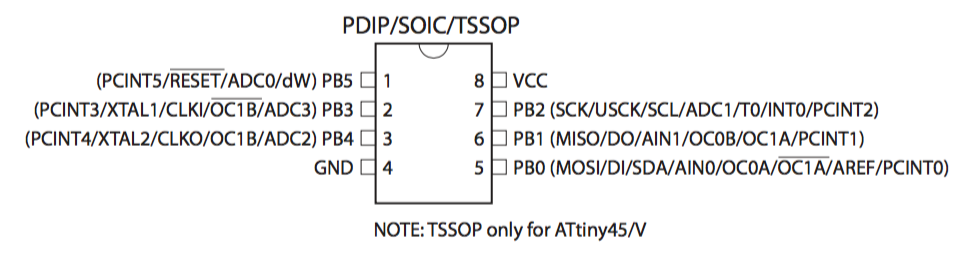
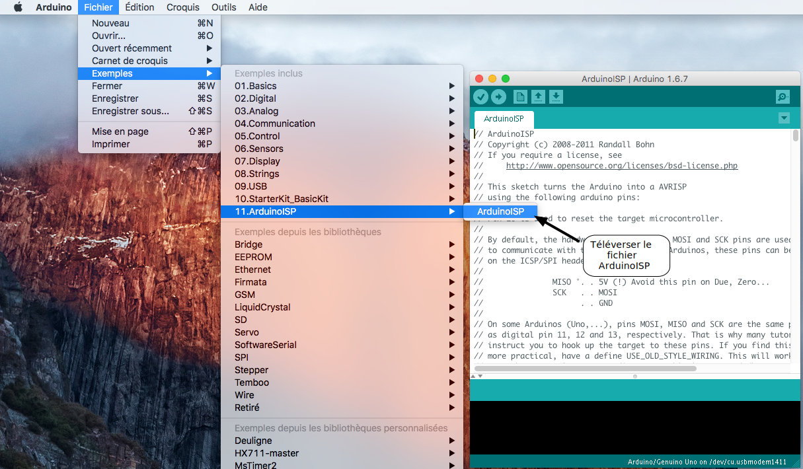
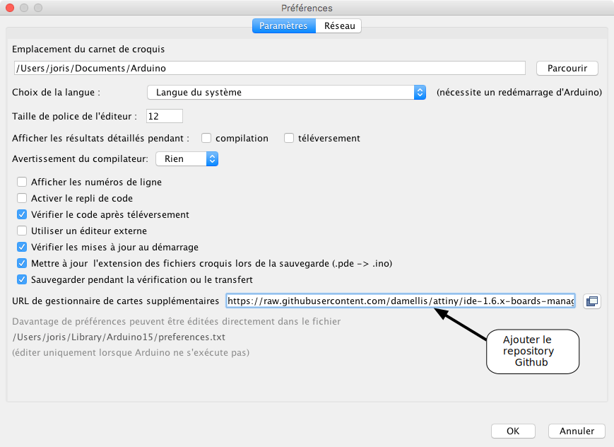
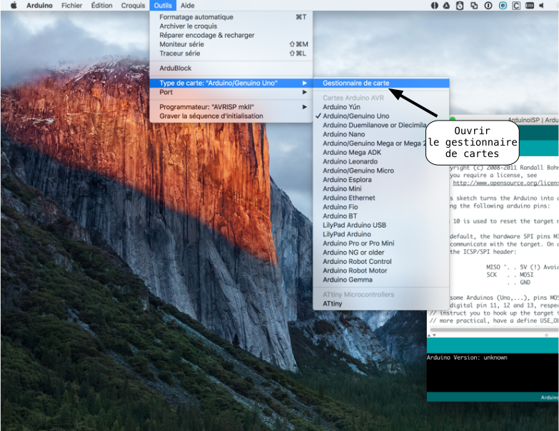
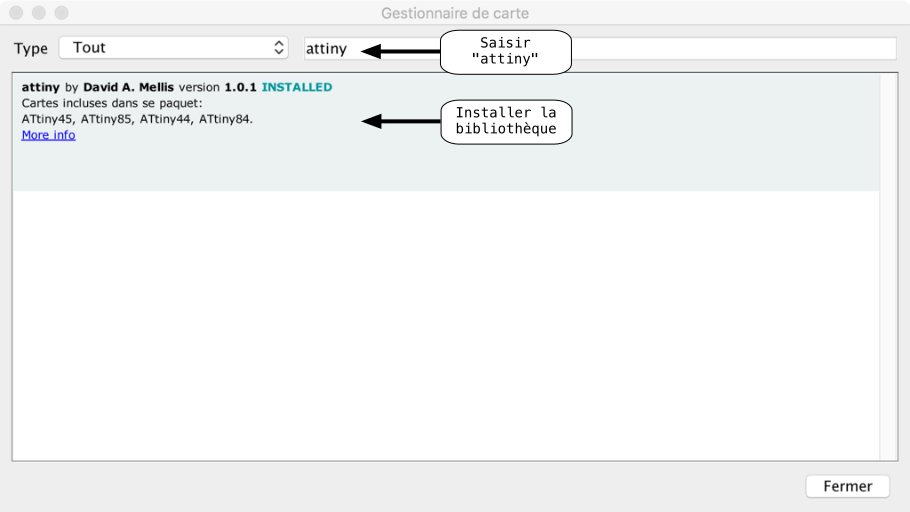

Utilisation des microcontrôleurs Attiny avec Arduino
Nous expliquons dans ce post comment programmer en environnement Arduino la famille de microcontrôleurs Attiny de chez Atmel. Les Attiny sont de petits microcontrôleurs (de 6 à 28 pattes) disposant de peu de ressources mais sont très appréciés pour les applications d'électronique embarquée où le gain de place et la faible consommation ont une importance capitale.
L'Attiny 45
L'Attiny 45 est un microcontrôleur de 8 pattes disposant d'une mémoire de 4ko et d'une fmax de 20Mhz. Nous donnons ci-dessous le brochage et le schéma structurel issus de la datasheet du fabricant :
 
Utiliser une carte Arduino comme programmateur
Deux possibilités pour programmer les puces Attiny en environnement Arduino :
- Utiliser un programmateur dédié type Tiny programmer
- Utiliser une carte Arduino (UNO ou Mega) comme programmateur
Nous traiterons ici que le deuxième cas à savoir la programmation d'un Attiny 45 à l'aide d'un Arduino UNO :
-
Dans un premier temps il faut téléverser sur l'Arduino UNO le code ArduinoISP

-
Ensuite, il faut rajouter l'URL d'un repository Github permettant d'accéder au téléversement du code sur les puces Attiny, au gestionnaire de cartes supplémentaires :

URL à rajouter : https://raw.githubusercontent.com/damellis/attiny/ide-1.6.x-boards-manager/package_damellis_attiny_index.json
-
Télécharger avec le gestionnaire de cartes la bibliothèque attiny :


-
Vous êtes fin prêts ! Il suffit maintenant de câbler l'Arduino UNO servant de programmateur au microcontrôleur Attiny.
Programmer un Attiny 45 avec l'IDE Arduino
Une fois les étapes précédentes effectuées, vous êtes en mesure de téleverser un code Arduino sur un Attiny 45 grâce à l'IDE. Prenons comme un exemple un code simple : nous faisons clignoter une led par intervalle de 500 ms.
const int pin_led 0; //Constante contenant le numéro de la pin où la led est reliée : 0 void setup() { pinMode(pin_led,OUTPUT); //Mise en sortie de la pin 0 } void loop() { digitalWrite(pin_led,HIGH); //Allumage de la led delay(500); // Attente de 500 ms digitalWrite(pin_led,LOW); //Extinction de la led delay(500); // Attente de 500 ms }
Pour téléverser le code sur l'Attiny 45 :
- Choisir dans Outils → Type de carte → Attiny
- Choisir dans Outils → Processeur → Attiny 45
- Chosir le port de l'Arduino UNO dans Outils → Port
- Choisir le programmateur Arduino as ISP dans Outils → Programmateur
- Appuyez sur Téléverser !
Nous obtenons alors le fonctionnement suivant de l'Attiny 45 :
Appuyez sur "Start Simulation"